Sandstorm Apps
This page is a placeholder. We're working on an app market with self-service uploads, categories, searchability, and prettier design. :)
Filter:
Show all apps.
Show only open source apps.
Etherpad
Ported by: Jason Paryani & Kenton Varda
License: Apache 2.0
Code: On GitHub
Version: 1.5.6+
Updated: August 1 2015
This is a port of Etherpad, a collaborative document editor.

EtherCalc
This is a port of EtherCalc, a collaborative spreadsheet editor.
Note: Despite the similar names, Etherpad and EtherCalc are not related.
Read more on the Sandstorm blog »

draw.io
draw.io is an advanced diagramming application with native Sandstorm integration. The non-Sandstorm version synchronizes with external storage like Dropbox or Google Drive, but the Sandstorm version stores directly to your server.
{kind=link}
LibreBoard
Version: 0.8.0
License: MIT
Code: On git.libreboard.com
Updated: Jan 24 2015
A "kanban" board similar to Trello that let you organize things in cards, and cards in lists. It supports most features you can expect (labels, comments, markdown formatting...) and is built on Meteor.

HackerSlides
An original Sandstorm app that combines Ace Editor and RevealJS into a slides / presentation app. Slides are written in Markdown, with a live preview on the right.

EtherDraw
Ported by: Jacob Weisz
License: Apache 2.0
Code: On GitHub
Version: 0.1
Updated: Jun 2 2015
A real time collaborative drawing tool from the developers who created Etherpad.
{kind=link}
Let's Chat
Ported by: Jason Paryani
License: MIT
Code: On Github
Updated: Jul 15 2015
Let's Chat is an open source self hosted chat app. It's similar to IRC chat rooms, except it is fully self contained (the app is both client and server) and has a simple web interface. (As with any Sandstorm app, use the Share button to invite other people into your chat.)
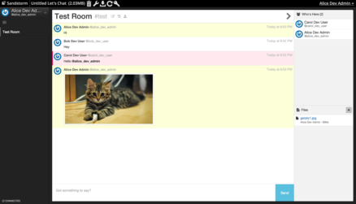
Paperwork
Paperwork is an open source self hosted note-taking & archiving app -- an alternative to Evernote.
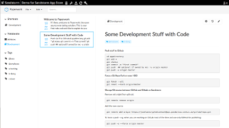
Laverna
Ported by: Jason Paryani
License: GNU GPL
Code: On Github
Updated: Mar 10 2015
Laverna is a note-taking web application where notes are written in Markdown. It is an alternative to Evernote.
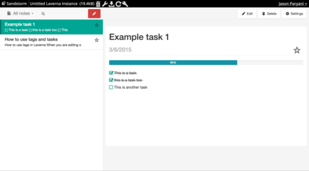
Lychee
Ported by: Jason Paryani
License: MIT
Code: On Github
Updated: Mar 13 2015
A port of Lychee, an open source image management tool. Upload, manage and share photos like from a native application.
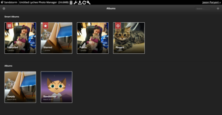
GitLab
Ported by: David Renshaw
License: MIT
Code: On Github
Updated: Feb 3 2015
A port of GitLab, an open source alternative to Github.
Read more on the Sandstorm blog »
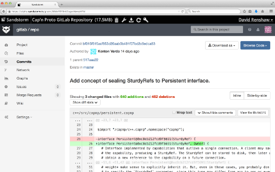
Groove Basin
Ported by: David Renshaw
License: MIT
Code: On GitHub
Updated: May 14 2015
A port of Groove Basin, a music library and player. Groove Basin not only plays music, but also allows multiple clients to collaboratively control a single stream.
Read more on the Sandstorm blog »
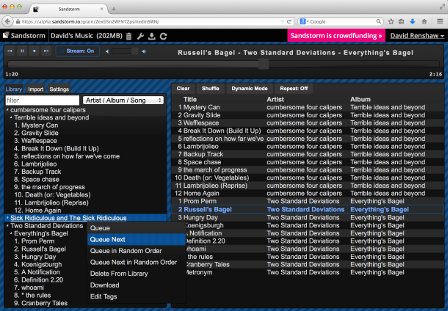
Apache Wave
Ported by: Jason Paryani
License: Apache 2.0
Code: On GitHub
Updated: Oct 9 2014
Apache Wave (nee Google Wave) is a real-time collaborative communications... thing. You can type stuff and watch your friends type stuff in real time. You can reply to things. You can attach images. You may never quite figure out what to do with it, but it sure is cool!
In all seriousness, Wave is basically a collaborative document editor with inline comments and threading of those comments. It's great for, say, design discussions, where you have an overall design doc and lots of little things to discuss within it.
Read more on the Sandstorm blog »
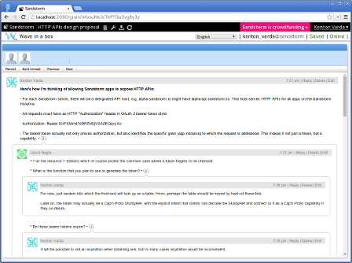
IPython Notebook
Ported by: Jason Paryani
License: 3-clause BSD
Code: On GitHub
Version: 3.1.0
Updated: Apr 29 2015
A port of IPython Notebook, a web-based interactive computational environment where you can execute Python code, plot graphs, render equations, and more.

WordPress
Ported by: David Renshaw
License: GNU GPL
Code: On GitHub
Updated: July 15 2015
A port of WordPress, a blogging platform and probably one of the most popular open source web apps in existence. With this app, you can publish your blog to any domain you control.
Read more on the Sandstorm blog »
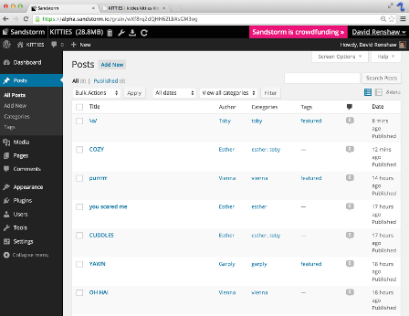
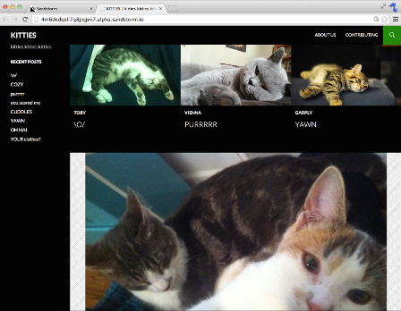
Ghost
Ported by: Jason Paryani & Sing Li
License: MIT
Code: On GitHub
Updated: Jun 29 2015
A port of Ghost, a beautifully-designed blogging platform. Use Ghost in Sandstorm to edit your blog, then publish it to any domain you control.
Read more on the Sandstorm blog »


ShareLaTeX
Ported by: David Renshaw
License: GNU AGPL
Code: On GitHub
Updated: May 27 2015
A port of ShareLaTeX, a collaborative LaTeX editor, used for typesetting scientific papers. Stop installing arcane tools to compile LaTeX; use this Sandstorm app instead.
Read more on the Sandstorm blog »

Telescope
Ported by: Jason Paryani
License: MIT
Code: On GitHub
Updated: Feb 2 2015
A port of Telescope, an open source clone of Reddit / Hacker News built on Meteor. Use this to run a private board where your friends can post and vote on links.
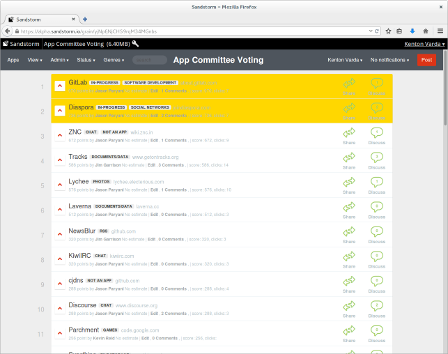
Tiny Tiny RSS
Ported by: Jason Paryani
License: GNU GPL
Code: On GitHub
Updated: Feb 4 2015
A port of Tiny Tiny RSS, an RSS feed reader. Since it's a Sandstorm app, it won't disappear. An Android client app is also available; see the app preferences for more details.
Read more on the Sandstorm blog »

MediaGoblin
Ported by: Jason Paryani & Judy Tuan
License: GNU AGPL
Code: On GitHub
Updated: Feb 3 2015
A port of MediaGoblin, a Free Software federated media publishing platform. An alternative to Flickr, YouTube, SoundCloud, etc.
Note: Due to limitations in the Sandstorm alpha, we currently have disabled video and atom feeds. These features will be enabled later.
Read more on the Sandstorm blog »

Mailpile
Ported by: Jason Paryani
License: Apache 2.0 / AGPL
Code: On GitHub
Updated: Feb 6 2015
This is a port of Mailpile, an e-mail app.
Note: Mailpile is still in beta. See our blog post about it.
Read more on the Sandstorm blog »

Roundcube
Ported by: Jason Paryani
License: GNU GPL
Code: On GitHub
Updated: Feb 12 2015
This is a port of Roundcube, an e-mail app.
This package also bundles Dovecot, an open source IMAP server. We automatically set up Dovecot behind the scenes to work with Roundcube; you don't need to worry about it.
Read more on the Sandstorm blog »

GitWeb
Ported by: David Renshaw
License: GNU GPL
Code: On Github
Updated: August 2 2015
A simple wrapper around GitWeb and git-http-backend, providing an extremely lightweight way to host a web-browsable Git repository.
Read more on the Sandstorm blog »
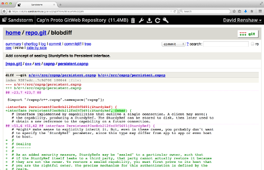
MediaWiki
Ported by: Jason Paryani & Joe Lee
License: GNU GPL
Code: On GitHub
Updated: Feb 2 2015
A port of MediaWiki, the software that powers Wikipedia. Use to host private wikis accessible only to those you share with.
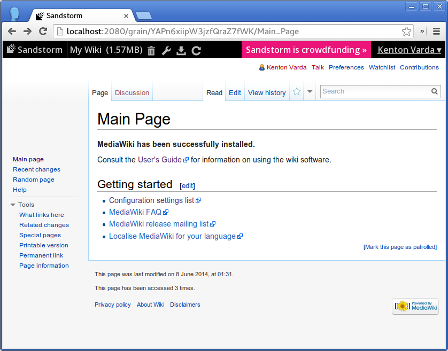
Scrumblr
Ported by: Jacob Weisz
License: GNU GPL
Code: On Github
Version: 0.3
Updated: May 29 2015
A collaborative online scrum tool designed to look as similar to a real physical sprint board as possible.
{kind=link}
Game of Y
Ported by: Kenton Varda
License: GNU AGPL
Code: On GitHub
(Ported using meteor-spk with no code changes)
A port of Hyperbotics' implementation of The Game of Y, a strategy board game. The goal is to connect all three sides using pieces of your color before your opponent does. See Hyperbotics' analysis of the game.
This game was ported as a demonstration of the meteor-spk tool for trivially porting Meteor apps to Sandstorm.
"The Game of Y" is a trademark of Kadon Enterprises, Inc., used by Hyperbotics with permission.
Read more on the Sandstorm blog »

Hacker CMS
This is a mash-up of Jekyll, Ace, and jsTree to create a Markdown-based web site editing and publishing app. This app was stiched together over the course of one day by Kenton.
Read more on the Sandstorm blog »

Duoludo
A minimalist platformer game with checkpoints, replay, and collaboration. A port of duoludo.

Meteor Blocks
Ported by: Jacob Weisz
Version: 1.0
License: MIT
Code: On GitHub
Updated: Aug 8 2014
This is a port of Meteor Blocks, a simple Voxel-based scene editor written in Meteor. This app is mostly a tech demo, but serves as an example of how easy it is to port Meteor apps to Sandstorm.
Read more on the Sandstorm blog »
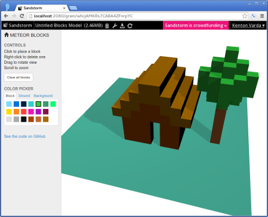
Acronymy
A little game / tech demo. The objective is to define every English word as an acronym of other words. The app is notable in that it is written in Rust directly against the low-level Sandstorm API, thus avoiding the need for an HTTP server.
Also try David's shared instance.
Web Shell
A very simple front-end to a Busybox shell. Can be used to poke at the Sandstorm sandbox.
Meteor Todo List
Ported by: Asheesh Laroia
License: MIT
Code: On GitHub
Updated: Feb 10 2015
This is the "Todo List" example application that comes with the Meteor development tools. The only changes were to remove some user interface elements for login.
Your App Here
Have you written a Sandstorm app that you'd like to see here? Let us know.
Have an app you want to package for Sandstorm? Check out the packaging guide!